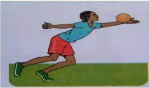
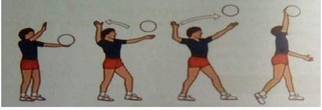
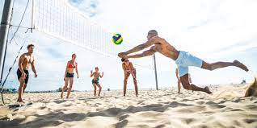
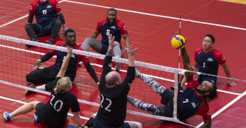

Skills in Volleyball
1. Dig Pass
The dig pass is a fundamental skill in volleyball used to receive a serve or spike ball. It involves two variations:
-
a. Single Hand Dig Pass
The single hand dig pass is used when the ball cannot be reached with both hands. The player uses one hand to receive or pass the ball.
Safety Instructions
- Ensure you warm up before any exercise
- Ensure the space is cleared of any hazards and risks such as rocks, sticks, and items that can hurt you when playing
Warm Up Activities
- High knee - Lift your right knee to the chest and hug it tight as you take a step, switch to the left knee.
- Players shuffle from the left to the right and back.
- Knee raisers - From a standing position, raise your right and left knees in turns.
- Half squats - From a standing position, hands raised upwards, make a half squat maintaining upright posture.
Cool Down Activity
- Walk at a moderate speed, swinging hands round.
- From a standing position, hands raised up, stretch the body upwards, breathing deeply.
Learning Points
- Position yourself facing the direction of the oncoming ball.
- Reach out to the ball and make contact with the forearm.
- Follow through by ensuring the ball is directed to the intended receiver.
-
b. Two Handed Dig Pass
The two handed dig pass is used when the ball can be reached with both hands.

The purpose of the dig pass includes:
- Receive a serve ball or spike ball
- Set the ball for spiking/boosting
- Pass the ball to opponents
- Covering
2. Service
Service is the act of putting the ball into play. There are three variations:
-
i. Over Arm Service
This is where the player tosses the ball with one hand and strikes it in the air above their head with the other hand so that it crosses the net and lands into the opponents' side.
Safety Instructions
- Perform thorough warm up before the activities.
- Avoid congestion by maintaining a safe distance from your peers.
- Follow instructions from your teacher and your peers.
Warm Up Activity
- Arm swings - Swing arms clockwise for 10 seconds, start slowly as you increase pace. Swing arms anti-clockwise for 10 seconds, start slowly as you increase pace.
- Imaginary over arm serve - Pretend you are holding and tossing a ball up and down, and hitting it with an open arm.
Cool Down Activity
- Walk at a moderate speed, swinging hands round.
- From a standing position, hands raised up, stretch the body upwards, breathing deeply.
-
ii. Underarm Service
The underarm service is performed by hitting the ball from below the shoulder level.

-
iii. Jump Service
The jump service is performed by tossing the ball and hitting it while in the air after a vertical jump.

Minor Games and Basic Rules
Minor games are small side games that help you practice skills learned in volleyball while applying the rules of the game.
Safety Instructions
- Never fist hit the ball. You could hit someone in the face and cause injury.
- Do not throw the ball over the net, roll it under the net.
- Do not swing on the post.
- Do not go under the nets, always walk around the net.
Types of Volleyball
- 1. Beach volleyball 
- 2. Sitting volleyball 
- 3. Field volleyball


Equipment
The necessary equipment for volleyball includes:
- Ball
- Net
- Posts (2.5m)
- Antennae
- Player's jersey